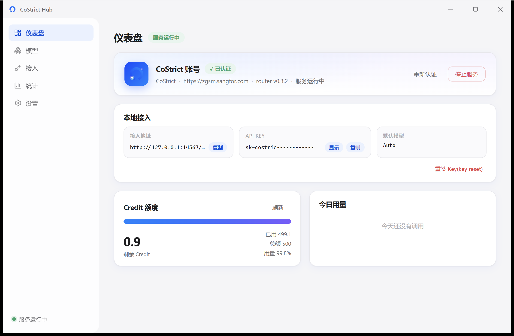
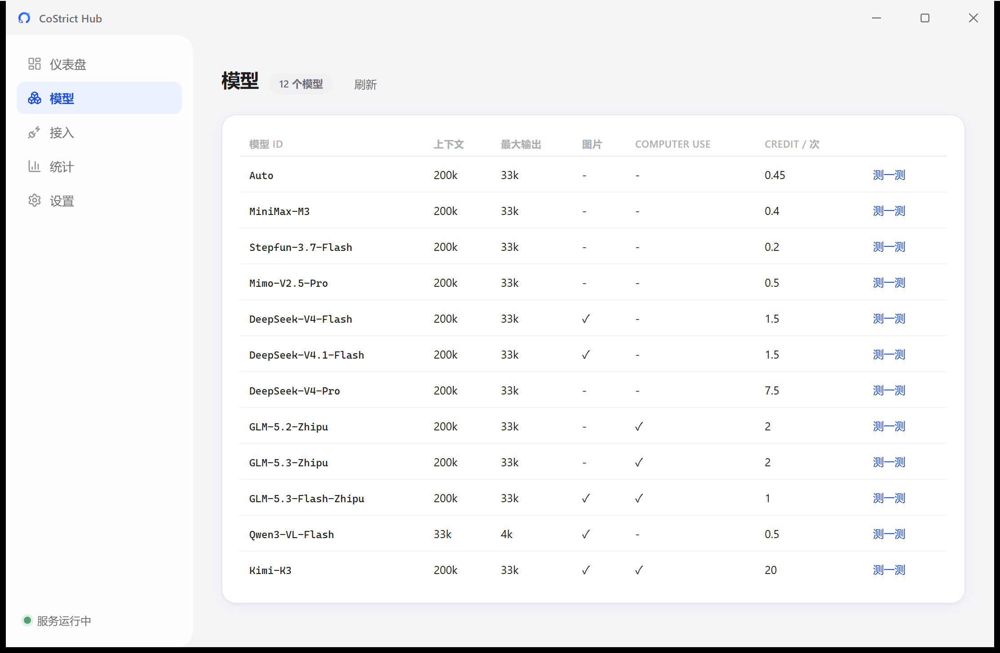
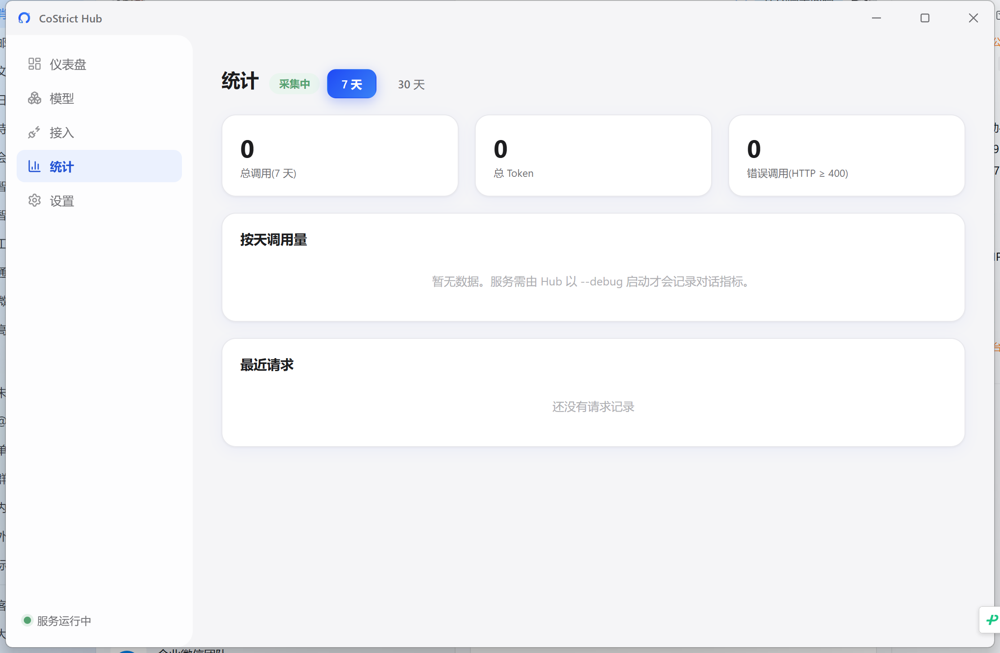

CoStrict Hub 在本地把 CoStrict 账号的 Credit 额度变成 OpenAI / Anthropic 兼容接口——Claude Code、Codex、Trae、WorkBuddy、Cline,统统接入,额度与用量一目了然。
免费开源 · MIT License · Windows 10 / 11 x64

Hub 负责认证、启动、额度与统计;生成流量全走本地,上游 token 由 costrict-router 自动管理。
深信服 SSO 弹窗登录,支持企业内网私有化地址;服务崩溃或重启后自动拉起,无需人工值守。
Credit 总额、已用、剩余实时进度条,15 秒自动刷新;还能看到每个模型单次调用的 Credit 消耗。
OpenAI 与 Anthropic 协议同时兼容,chat/completions、messages、responses 一应俱全,流式无损。
点工具 logo,拿到代入端点、Key、模型的现成配置片段;Codex 更可一键自动写入配置文件。
按天调用量、Token 消耗、错误请求,最近请求明细逐一可见,额度花在哪清清楚楚。
关闭窗口即最小化托盘,开机自启、单实例、退出自动收尾,像原生小工具一样安静可靠。
Hub 托管开源的 costrict-router,把认证、协议转换这些难事都关在本地一条链路里。
点一下「登录」,浏览器完成深信服 SSO。上游 token 由 costrict-router 自动持有并按期刷新。
router 在 127.0.0.1:14567 提供兼容接口,自动做协议转换;Hub 常驻看护,掉线自愈。
把接入地址、本地 Key、模型名填进任意工具——from Claude Code to Trae,额度共享、消耗可见。
国产与国际主流 AI 工具逐个适配:WorkBuddy、CodeBuddy、Trae、ZCode、Qwen Code、Claude Code、Codex、Cline / Roo Code……点 logo 即得分步指引和可复制配置,Key 与默认模型自动代入。

